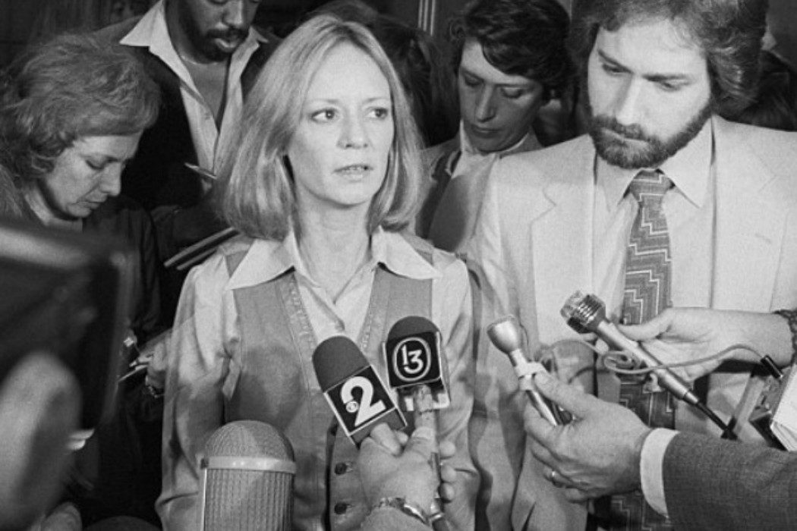

Inicio
Hechos Importantes
King se convirtió en profesional después de 1968 y se convirtió en la primera mujer atleta en ganar más de $ 100,000 en una temporada (1971). En 1973 venció al envejecimientoBobby Riggs en un muy publicitado "Batalla de sexos ”. El partido estableció un récord para la audiencia de tenis más grande y la bolsa más grande otorgada hasta ese momento. Ella presionó sin descanso por los derechos de las jugadoras, ayudó a formar una gira de mujeres separada y obtuvo el respaldo financiero de patrocinadores comerciales. Fue una de las fundadoras y la primera presidenta (1974) de la Asociación de Tenis Femenino.King y su esposo, Larry King (casado en 1965-1987), formaron parte de un grupo que fundó World TeamTennis (WTT) en 1974. King se desempeñó como jugadora-entrenadora de los Philadelphia Freedoms, convirtiéndose así en una de las primeras mujeres en entrenar a atletas profesionales masculinos. La WTT se retiró después de 1978 debido a pérdidas financieras, pero King revivió la competencia en 1981. Ese mismo año, King admitió haber tenido una aventura homosexual con su exsecretaria, que estaba demandando a King por apoyo material. (Su secretaria perdió la demanda). Al hacerlo, King se convirtió en la atleta femenina más prominente que se declaró lesbiana en ese momento, pero posteriormente perdió todos sus contratos de patrocinio como resultado. Después de su divorcio de Larry King, abrazó públicamente su homosexualidad y se convirtió en defensora de los derechos de los homosexuales .
